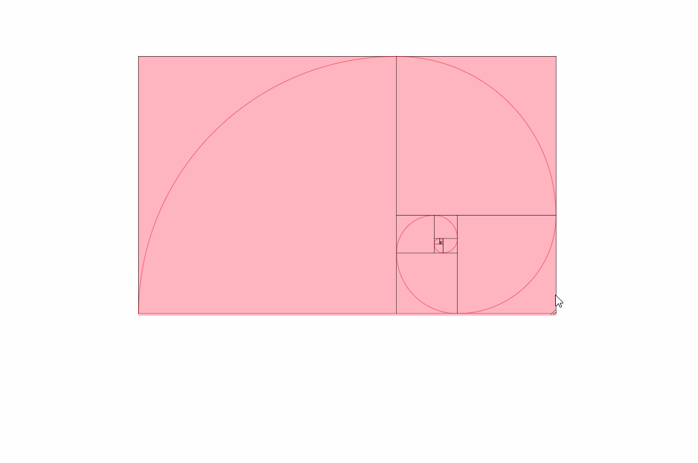

I want to have an inline svg element's contents scale when size is non-native.
Of course I could have it as a separate file and scale it like that.
index.html: <img src="foo.svg" style="width: 100%;" />
foo.svg: <svg width="123" height="456"></svg>
However, I want to add additional styles to the SVG thru CSS, so linking an
external one is not an option. How do I make an inline SVG scale?
Answer
To specify the coordinates within the SVG image independently of the scaled
size of the image, use the viewBox attribute on the SVG element to define
what the bounding box of the image is in the coordinate system of the image,
and use the width and height attributes to define what the width or height
are with respect to the containing page.
For instance, this will render as a 10px by 20px triangle:
svg {
border: 1px solid blue;
}
<svg>
<polygon fill=red stroke-width=0
points="0,10 20,10 10,0" />
</svg>
Now, if you set only the width and height, that will change the size of the
SVG element, but not scale the triangle:
svg {
border: 1px solid blue;
}
<svg width=100 height=50>
<polygon fill=red stroke-width=0
points="0,10 20,10 10,0" />
</svg>
If you set the view box, that causes it to transform the image such that the
given box (in the coordinate system of the image) is scaled up to fit within
the given width and height (in the coordinate system of the page). For
instance, to scale up the triangle to be 100px by 50px:
svg {
border: 1px solid blue;
}
<svg width=100 height=50 viewBox="0 0 20 10">
<polygon fill=red stroke-width=0
points="0,10 20,10 10,0" />
</svg>
If you want to scale it up to the width of the HTML viewport:
svg {
border: 1px solid blue;
}
<svg width="100%" viewBox="0 0 20 10">
<polygon fill=red stroke-width=0
points="0,10 20,10 10,0" />
</svg>
Note that by default the aspect ratio is preserved. So if you specify that the
element should have a width of 100%, but a height of 50px, it will actually
only scale up to the height of 50px (unless you have a very narrow window):
svg {
border: 1px solid blue;
}
<svg width="100%" height="50px" viewBox="0 0 20 10">
<polygon fill=red stroke-width=0
points="0,10 20,10 10,0" />
</svg>
If you actually want it to stretch horizontally, disable aspect ratio
preservation with preserveAspectRatio=none:
svg {
border: 1px solid blue;
}
<svg width="100%" height="50px" viewBox="0 0 20 10" preserveAspectRatio="none">
<polygon fill=red stroke-width=0
points="0,10 20,10 10,0" />
</svg>
Suggest
I ended up doing this to get proportional scaling:
NOTE: This sample is written with React. If you aren't using that, change the
camel case stuff back to hyphens (ie: changebackgroundColor to background-
color and change the style Object back to a String).
<div
style={{
backgroundColor: 'lightpink',
resize: 'horizontal',
overflow: 'hidden',
width: '1000px',
height: 'auto',
}}
>
<svg
width="100%"
viewBox="113 128 972 600"
preserveAspectRatio="xMidYMid meet"
>
<g> ... </g>
</svg>
</div>
Here's what is happening in the above sample code:
VIEWBOX
MDN: https://developer.mozilla.org/en-US/docs/Web/SVG/Attribute/viewBox
min-x, min-y, width and height
ie: viewbox="0 0 1000 1000"
Viewbox is an important attribute because it basically tells the SVG what size
to draw and where. If you used CSS to make the SVG 1000x1000 px but your
viewbox was 2000x2000, you would see the top-left quarter of your SVG.
The first two numbers, min-x and min-y, determine if the SVG should be offset
inside the viewbox.
My SVG needs to shift up/down or left/right
Examine this: viewbox="50 50 450 450"
The first two numbers will shift your SVG left 50px and up 50px, and the
second two numbers are the viewbox size: 450x450 px. If your SVG is 500x500
but it has some extra padding on it, you can manipulate those numbers to move
it around inside the "viewbox".
Your goal at this point is to change one of those numbers and see what
happens.
You can also completely omit the viewbox, but then your milage will vary
depending on every other setting you have at the time. In my experience, you
will encounter issues with preserving aspect ratio because the viewbox helps
define the aspect ratio.
PRESERVE ASPECT RATIO
MDN: https://developer.mozilla.org/en-
US/docs/Web/SVG/Attribute/preserveAspectRatio
Based on my research, there are lots of different aspect ratio settings, but
the default one is called xMidYMid meet. I put it on mine to explicitly
remind myself. xMidYMid meet makes it scale proportionately based on the
midpoint X and Y. This means it stays centered in the viewbox.
WIDTH
MDN: https://developer.mozilla.org/en-US/docs/Web/SVG/Attribute/width
Look at my example code above. Notice how I set only width, no height. I set
it to 100% so it fills the container it is in. This is what is probably
contributing the most to answering this Stack Overflow question.
You can change it to whatever pixel value you want, but I'd recommend using
100% like I did to blow it up to max size and then control it with CSS via the
parent container. I recommend this because you will get "proper" control. You
can use media queries and you can control the size without crazy JavaScript.
SCALING WITH CSS
Look at my example code above again. Notice how I have these properties:
resize: 'horizontal', // you can safely omit this
overflow: 'hidden', // if you use resize, use this to fix weird scrollbar appearance
width: '1000px',
height: 'auto',
This is additional, but it shows you how to allow the user to resize the SVG
while maintaining the proper aspect ratio. Because the SVG maintains its own
aspect ratio, you only need to make width resizable on the parent container,
and it will resize as desired.
We leave height alone and/or set it to auto, and we control the resizing with
width. I picked width because it is often more meaningful due to responsive
designs.
Here is an image of these settings being used:

If you read every solution in this question and are still confused or don't
quite see what you need, check out this link here. I found it very helpful:
https://css-tricks.com/scale-svg/
It's a massive article, but it breaks down pretty much every possible way to
manipulate an SVG, with or without CSS. I recommend reading it while casually
drinking a coffee or your choice of select liquids.